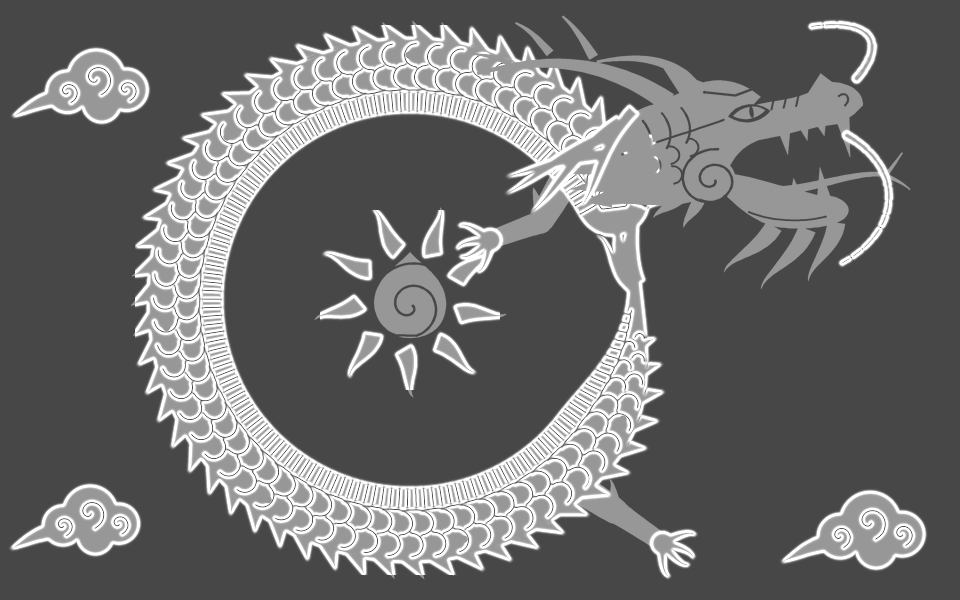
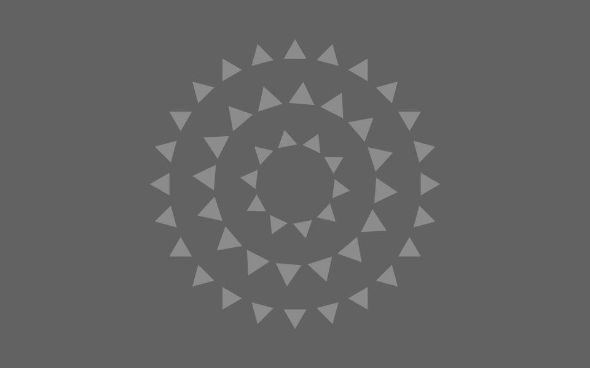
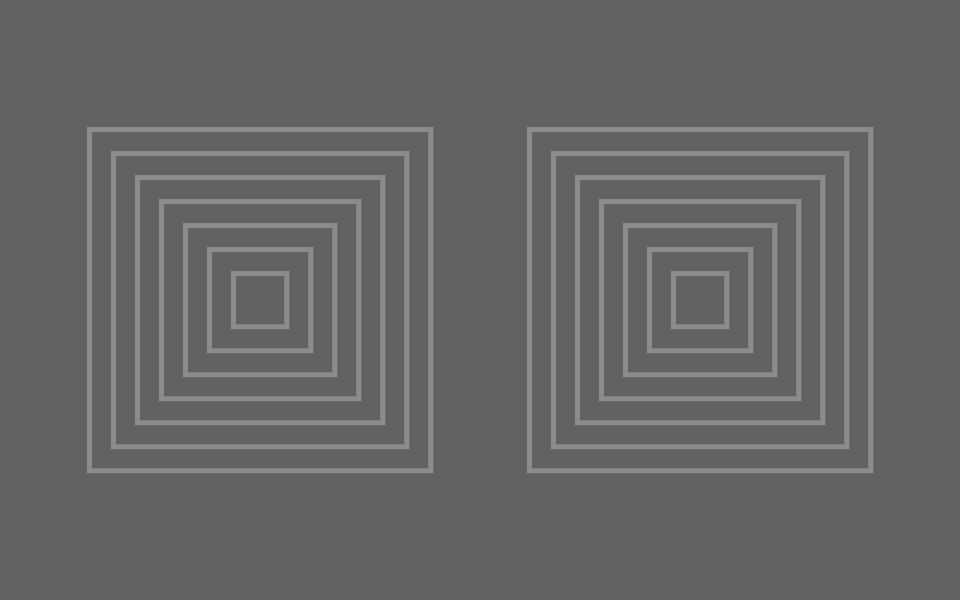
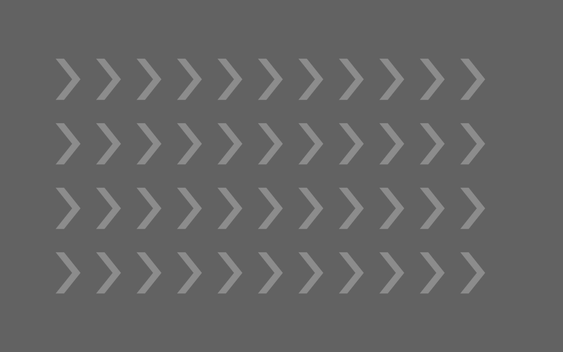

FEATURED / 龍の作品ARTWORK & ILLUSION STUDIES
止まっているのに、動く。
位置も、角度も、大きさも同じまま。
輪郭の明暗だけで生まれる動きを、再生して確かめてください。
気になった作品は、ダウンロードして自分の手で編集できます。

STILL / 静止

STILL / 静止

STILL / 静止
作品をひらいて、
動きを変えてみる。
- 作品の「編集用JSON」をダウンロード。
- 錯視ペイントを開き、「ファイル」→「プロジェクトを開く」からJSONを選択。
- 「ガイド」をオフにし、「再生」で錯視を確認。
- 再生を止め、レイヤーと動きの範囲を選んで方向・強さを編集。
編集中の作品がある場合は、サンプルを開く前に「プロジェクトを保存」で残してください。
サンプルの下絵は固定されており、変化するのは輪郭付近の明暗です。見え方の強さには個人差があります。